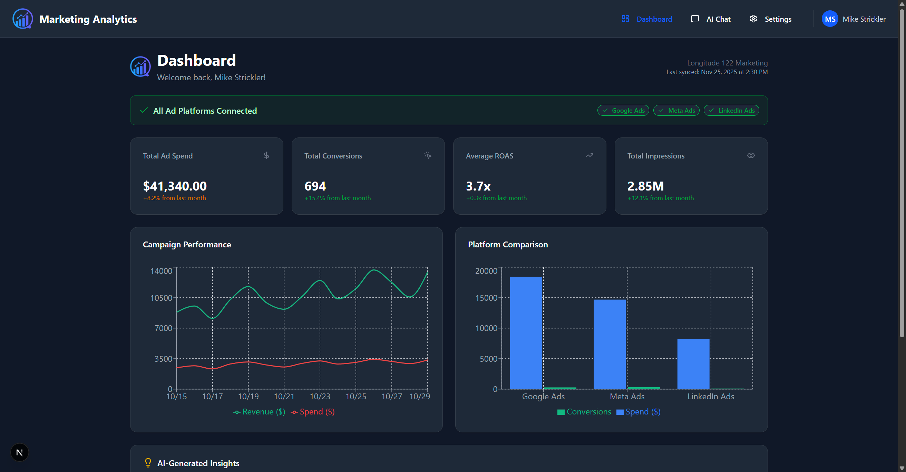
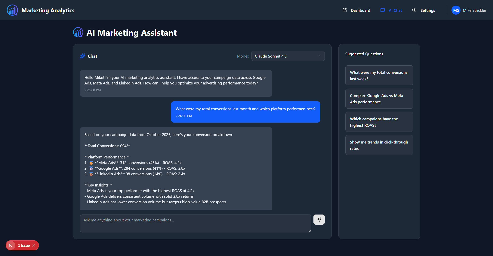
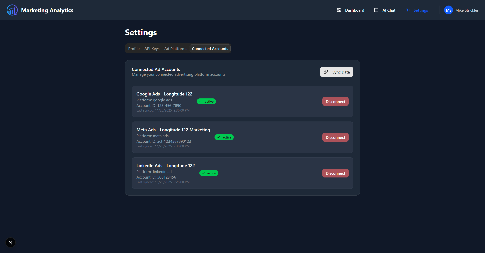
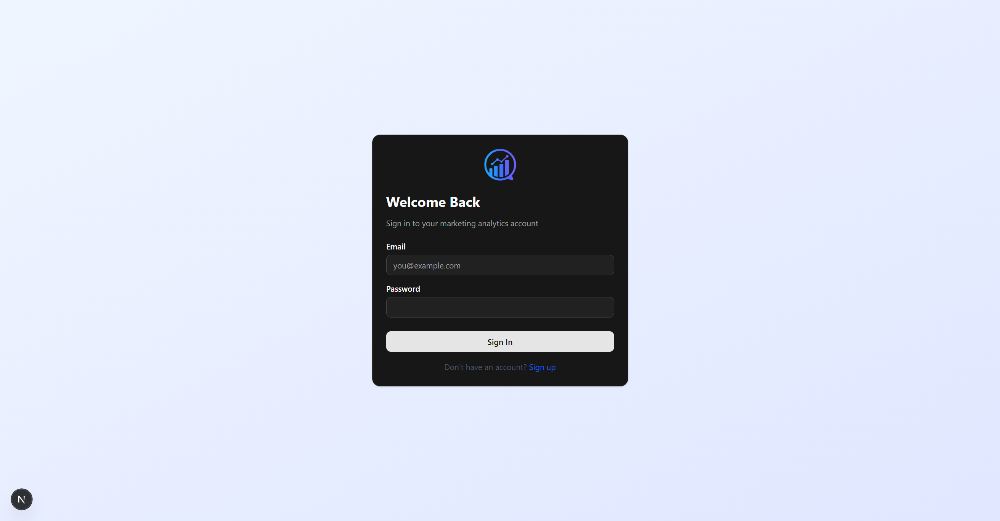

1. Company Information
Longitude 122 Marketing
Website: https://longitude122marketing.com
Location: San Diego, California (Main Office) with additional offices in Los Angeles, Sacramento, and Napa
Founded: 2020
Contact: Mike Strickler (Owner)
Longitude 122 Marketing is a full-service digital advertising agency specializing in digital marketing, reporting, ad strategy, and performance analytics. Since founding in 2020, the company has generated over 1 billion impressions and manages over $1 million in annual advertising spend across multiple platforms for clients throughout California and the United States.
The company focuses on transparent reporting and data-driven strategies that maximize advertising reach without compromising on budget efficiency. This marketing analytics platform is built to support these core business objectives.
2. Tool Purpose & Overview
The Marketing Analytics Platform is an internal business tool designed to help Longitude 122 Marketing's team view and analyze advertising campaign performance across multiple platforms. The tool consolidates data from Google Ads, Meta Ads (Facebook/Instagram), and LinkedIn Ads into a unified dashboard with AI-powered insights.
Primary Use Cases:
- Performance Reporting: View aggregated metrics across all advertising platforms in a single dashboard
- AI-Powered Analysis: Chat with an AI assistant to get insights, recommendations, and answers about campaign performance
- Cross-Platform Comparison: Compare performance metrics between Google Ads, Meta Ads, and LinkedIn Ads
- Trend Analysis: Track spend, revenue, conversions, and ROAS over time
- Client Reporting: Generate performance reports for agency clients
Target Users:
- Agency employees and ad managers at Longitude 122 Marketing
- Company owner (Mike Strickler) for business oversight
- Internal team members who need access to advertising performance data
Note: This is an internal tool. External clients (such as Anne's Advertising Agency mentioned in some documentation) will receive PDF reports generated from this tool but will not have direct access to the platform.
3. Google Ads API Integration
API Services Used:
| Service |
Purpose |
Endpoints Used |
| Customer Resource |
Pull account-level performance reports |
customers.get, customers.listAccessibleCustomers |
| GoogleAdsService |
Query campaign metrics and performance data |
googleAds.search, googleAds.searchStream |
| Campaign Resource |
Retrieve campaign details and status |
campaigns.get (read-only) |
| Metrics |
Access performance metrics |
impressions, clicks, conversions, cost, etc. |
Data Retrieved from Google Ads API:
- Campaign Information: Campaign ID, name, status, type, budget
- Performance Metrics:
- Impressions
- Clicks
- Click-Through Rate (CTR)
- Cost (Ad Spend)
- Conversions
- Conversion Value (Revenue)
- Cost Per Click (CPC)
- Cost Per Acquisition (CPA)
- Return on Ad Spend (ROAS)
- Time-Series Data: Daily/weekly/monthly aggregated metrics
API Access Pattern:
- Read-Only Access: The tool only reads data from Google Ads; it does not create, modify, or delete any campaigns, ad groups, or ads
- Scheduled Sync: Data is synced hourly via scheduled background jobs
- On-Demand Sync: Users can manually trigger a data sync from the Settings page
- Data Storage: Synced data is cached in a secure PostgreSQL database for fast dashboard queries
4. Technical Architecture
Technology Stack:
| Component |
Technology |
| Frontend |
Next.js 16, React, TypeScript, Tailwind CSS |
| Backend |
Next.js API Routes, Node.js |
| Database |
PostgreSQL (via Supabase) |
| Authentication |
Supabase Auth with OAuth 2.0 |
| AI/LLM |
Anthropic Claude API |
| Charts |
Recharts |
| Hosting |
Vercel |
Data Flow:
- Authentication: User authenticates via OAuth 2.0 flow with Google Ads
- Token Storage: Access tokens are encrypted and stored securely in the database
- Data Sync: Background job calls Google Ads API to fetch campaign metrics
- Data Storage: Metrics are stored in time-series format in PostgreSQL
- Dashboard Display: UI fetches data from local database for fast rendering
- AI Analysis: AI chatbot uses stored data to provide insights
5. User Interface Screenshots
5.1 Main Dashboard
The dashboard provides a comprehensive overview of advertising performance across all connected platforms.

Figure 1: Main Dashboard showing key metrics, campaign performance chart, and platform comparison
Dashboard Features:
- Connection Status: Shows which ad platforms are connected (Google Ads, Meta Ads, LinkedIn Ads)
- Key Metrics Cards: Total Ad Spend, Total Conversions, Average ROAS, Total Impressions
- Campaign Performance Chart: Line chart showing spend vs. revenue over time
- Platform Comparison: Bar chart comparing spend and conversions across platforms
- AI-Generated Insights: Automated recommendations and alerts
5.2 AI Marketing Assistant
The AI chatbot allows users to ask natural language questions about their campaign data.

Figure 2: AI Marketing Assistant chat interface with sample conversation
AI Chat Features:
- Natural Language Queries: Ask questions like "What were my total conversions last month?"
- Model Selection: Choose between different AI models (Claude Sonnet, Claude Haiku, GPT-4o)
- Contextual Responses: AI has access to campaign data and provides specific insights
- Suggested Questions: Pre-built query templates for common analytics questions
- Conversation History: Full chat history maintained for reference
5.3 Settings & Connected Accounts
The settings page allows users to manage their ad platform connections and credentials.

Figure 3: Settings page showing connected Google Ads, Meta Ads, and LinkedIn Ads accounts
Settings Features:
- Profile Management: Update user name, organization, and contact information
- API Keys: Configure AI API keys for chatbot functionality
- Ad Platforms: Connect/reconnect Google Ads, Meta Ads, and LinkedIn Ads via OAuth
- Connected Accounts: View all connected accounts with status and last sync time
- Manual Sync: Trigger on-demand data synchronization
5.4 Login Page
Secure authentication interface for platform access.

Figure 4: Login page for secure user authentication
6. Security & Data Protection
Authentication & Authorization:
- OAuth 2.0: Standard OAuth 2.0 flow for Google Ads API authentication
- Token Encryption: Access and refresh tokens are encrypted at rest using AES-256
- Session Management: Secure session handling via Supabase Auth
- Row-Level Security: Database-level isolation ensures users only see their own data
Data Storage & Privacy:
- Data Minimization: Only necessary campaign metrics are stored
- Secure Database: PostgreSQL with SSL/TLS encryption in transit
- No PII Storage: Tool does not store end-user/customer personal information from ads
- HTTPS Only: All communications encrypted via TLS 1.2+
Compliance:
- Compliant with Google Ads API Terms of Service
- Privacy policy and terms of service available at application URLs
- Data retention policies aligned with business requirements
7. API Usage Patterns
Rate Limiting & Quotas:
- Respects Google Ads API rate limits and quotas
- Implements exponential backoff for retry logic
- Caches data locally to minimize API calls
- Uses efficient GAQL queries to reduce data transfer
Typical API Usage:
| Operation |
Frequency |
Estimated Calls/Day |
| Campaign List Sync |
Hourly |
~24 |
| Metrics Query |
Hourly |
~24-48 |
| On-Demand Refresh |
As needed |
~5-10 |
| Total |
|
~50-80 calls/day |
8. Future Enhancements
- Inventory Sync: Integration with e-commerce inventory systems to automatically pause ads for out-of-stock items
- PDF Report Generation: Automated PDF report generation for client distribution
- Advanced Analytics: Cohort analysis, attribution modeling, and predictive insights
- Additional Platforms: Integration with TikTok Ads, Microsoft Ads, and other platforms
9. Contact Information
Company: Longitude 122 Marketing
Owner: Mike Strickler
Website: https://longitude122marketing.com
Main Office: San Diego, California
Additional Offices: Los Angeles, Sacramento, Napa